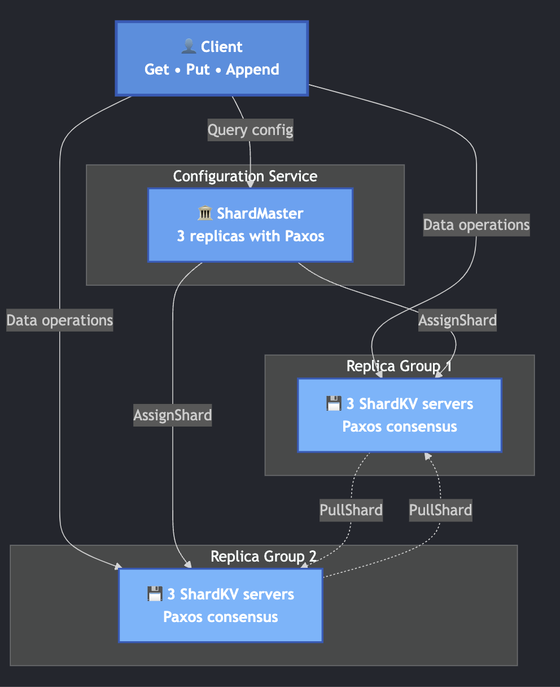

Sharded Key-Value Store
Overview
Developed a fault-tolerant, sharded key-value storage system in Go that provides strong consistency guarantees through Paxos consensus. The system supports dynamic reconfiguration, allowing it to adapt to changing cluster topologies while maintaining data availability and consistency.
Key Features
- Implemented the Paxos algorithm from scratch to ensure all replicas in a group agree on operation ordering, providing strong consistency even in the presence of failures
- Distributed data across multiple replica groups using consistent hashing, enabling horizontal scalability and load balancing
- Designed the system to continue operating correctly even when minority nodes fail, automatically detecting failures and re-routing requests
- Implemented safe shard migration between replica groups, allowing the cluster to adapt to changes in capacity without downtime or data loss
- Utilized Go's concurrency primitives (goroutines, channels) to handle multiple client requests simultaneously while maintaining consistency
Technical Implementation
Architecture
The system consists of three main components: clients, a configuration service, and replica groups. Clients send get/put requests to appropriate replica groups based on shard assignments. The configuration service manages cluster membership and shard distribution. Each replica group contains multiple servers that use Paxos to agree on the order of operations.
Paxos Implementation
I implemented Multi-Paxos to efficiently handle sequences of operations. Each replica group runs its own Paxos instance, with one server typically acting as the leader to reduce latency. The implementation handles network partitions, message loss, and server failures while guaranteeing that all replicas eventually converge to the same state.
Shard Migration
Dynamic reconfiguration is one of the most complex aspects of the system. When the configuration changes, affected replica groups must safely transfer shards to new owners. This involves: (1) detecting configuration changes, (2) pulling necessary data from previous owners, (3) ensuring no operations are lost during migration, and (4) handling overlapping reconfigurations. I implemented a protocol that tracks configuration versions and uses Paxos to coordinate the migration process.
Challenges & Solutions
One significant challenge was ensuring correctness during concurrent reconfigurations. If multiple shards are being transferred simultaneously, the system must carefully track which operations have been applied and prevent duplicate execution. I solved this by implementing a comprehensive state machine that tracks both data and metadata, with each operation being logged and applied atomically. Another challenge was debugging distributed consensus bugs. I implemented extensive logging and that helped me debug the system and used the race detector to find bugs.
Results & Impact
The final system passes a comprehensive test suite that simulates network failures, server crashes, and complex reconfiguration scenarios. It achieves strong consistency guarantees while maintaining high availability.